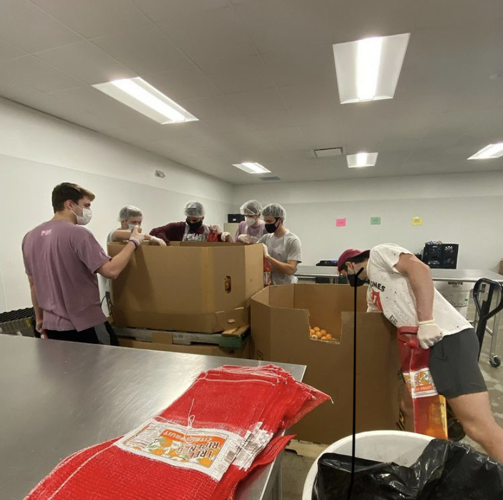

As part of my men's organization, the Professional Brotherhood of Engineers, I have taken part in Canstruction. This event uses creativity and engineering to design structures out of cans of food which are then donated to feed the hungry.

We also take part in the Big Event, where organizations can take part in volunteer service focused on helping the local community. We visited a few older peoples' houses to help with any yard work they were not able to do on their own.
Some weekends we also spend at the Brazos Valley Food Bank to help organize the incoming food.